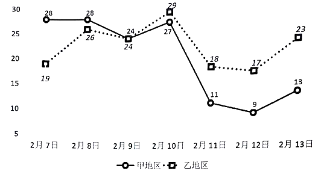
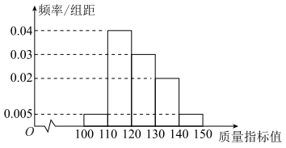

← 概率资料目录考点 39 · 均值与方差在生活中运用 · 练习
资料来源：学科网一轮复习笔记 · 共 12 题
第 1 题
1．设0＜a＜1，已知随机变量X的分布列是
若，则a＝（ ）
查看答案与解析
【答案】A
【解析】，
，∴，即，解得
．故选：A．
第 2 题
2．一个袋中放有大小、形状均相同的小球，其中红球1个、黑球2个，现随机等可能取出小球，当有放回依次取出两个小球时，记取出的红球数为；当无放回依次取出两个小球时，记取出的红球数为 ，则（
）
，则（
）
A．，
B．，
C．，
D．，
查看答案与解析
【答案】B
【解析】
可能的取值为 ；
可能的取值为，
；
可能的取值为，
，，，
故，.
，，
故，,
故，.故选B.
第 3 题
3．随机变量
的分布列是
若，则随机变量
的方差
的值为（
）
A．

B．
C．
D．
查看答案与解析
【答案】C
【解析】由概率之和为1，有，
又，即，
可得
所以
所以
故选：C
第 4 题
4．甲、乙两名射手在一次射击中得分为两个相互独立的随机变量ξ，η，已知甲、乙两名射手在每次射击中射中的环数大于6环，且甲射中10，9，8，7环的概率分别为0.5，3a，a，0.1，乙射中10，9，8环的概率分别为0.3，0.3，0.2.
(1)求ξ，η的分布列；
(2)求ξ，η的数学期望与方差，并以此比较甲、乙的射击技术．
查看答案与解析
【答案】(1)见解析.
(2)
甲比乙的射击技术好.
【解析】(1)由题意得：0.5＋3a＋a＋0.1＝1，解得a＝0.1.
因为乙射中10，9，8环的概率分别为0.3，0.3，0.2，所以乙射中7环的概率为1－(0.3＋0.3＋0.2)＝0.2.
所以ξ，η的分布列分别为：
ξ
|
10
|
9
|
8
|
7
|
P
|
0.5
|
0.3
|
0.1
|
0.1
|
η
|
10
|
9
|
8
|
7
|
P
|
0.3
|
0.3
|
0.2
|
0.2
|
(2)由(1)得：
E(ξ)＝10×0.5＋9×0.3＋8×0.1＋7×0.1＝9.2；
E(η)＝10×0.3＋9×0.3＋8×0.2＋7×0.2＝8.7；
D(ξ)＝(10－9.2)2×0.5＋(9－9.2)2×0.3＋(8－9.2)2×0.1＋(7－9.2)2×0.1＝0.96；
D(η)＝(10－8.7)2×0.3＋(9－8.7)2×0.3＋(8－8.7)2×0.2＋(7－8.7)2×0.2＝1.21.
由于E(ξ)＞E(η)，D(ξ)＜D(η)，说明甲射击的环数的均值比乙高，且成绩比较稳定，所以甲比乙的射击技术好.
第 5 题
5．某烘焙店加工一个成本为60元的蛋糕，然后以每个120元的价格出售，如果当天卖不完，剩下的这种蛋糕作餐厨垃圾处理.
（1）若烘焙店一天加工16个这种蛋糕，，求当天的利润 （单位：元）关于当天需求量
（单位：元）关于当天需求量 （单位：个，
）的函数解析式；
（单位：个，
）的函数解析式；
（2）烘焙店记录了100天这种蛋糕的日需求量（单位：个），整理得下表：
日需求量
|
14
|
15
|
16
|
17
|
18
|
19
|
20
|
频数
|
10
|
20
|
16
|
16
|
15
|
13
|
10
|
①若烘焙店一天加工16个这种蛋糕， 表示当天的利润（单位：元），求
的分布列与数学期望及方差；
表示当天的利润（单位：元），求
的分布列与数学期望及方差；
②若烘焙店一天加工16个或17个这种蛋糕，仅从获得利润大的角度考虑，你认为应加工16个还是17个？请说明理由.
查看答案与解析
【答案】（1）
（2）①分布列见解析；
（元）；
②应加工17个，详见解析
【解析】（1）由题意，当
时，利润；
当
时，利润；
综上，当天的利润
关于当天需求量
的函数解析式为；
（2）①由（1）可得，
当
时，利润；
当
时，利润；
当
时，利润；
所以
的分布列为：
所以
（元）；
；
②由题意，加工 个蛋糕时，
个蛋糕时，
当
时，利润；
当
时，利润；
当
时，利润；
当
时，利润；
的分布列如下：
|
660
|
780
|
900
|
1020
|

|
0.1
|
0.2
|
0.16
|
0.54
|
则
从数学期望来看，每天加工17个蛋糕的利润高于每天加工16个蛋糕的利润，应加工17个.
第 6 题
6．某景区有A，B两个出入口，在景区游客中随机选取了100人作为样本进行调查，调查结果显示从A出入口进入景区的有55人，从B出入口进入景区的有45人，
（1）从上述样本中选取2人，求两人恰好从不同出入口进入景区的概率；
（2）为了给游客提供更舒适的旅游体验，景区计划在今年国庆节当日投入1到3列往返两个景区出入口的通勤小火车，根据过去5年的数据资料显示，每年国庆节当日客流量
(单位：万人)的频数表如下：
国庆节当日客流量
|
|
|
|
频数
|
1
|
2
|
2
|
以这5年的数据资料记录的3个区间客流量的频率作为每年客流量在该区间发生的概率，且每年国庆节当日客流量相互独立.已知国庆节当日小火车的使用量(单位：列)受当日客流量
(单位：万人)的影响，其关系如下表：
国庆节当日客流量
|
|
|
|
小火车的使用量
|
1
|
2
|
3
|
若某列小火车在国庆节当日投入且被使用，则景区当日可获得利润3万元；若某列小火车在国庆节当日投入却未被使用，则景区当日亏损0.5万元；记 (单位：万元)表示该景区在国庆节当日获得的总利润，则该景区在今年国庆节当日应投入多少列小火车才能使获得利润的期望最大？
(单位：万元)表示该景区在国庆节当日获得的总利润，则该景区在今年国庆节当日应投入多少列小火车才能使获得利润的期望最大？
查看答案与解析
【答案】（1） ；（2）景区在今年国庆节当日应投入3列小火车使获得利润的期望最大.
；（2）景区在今年国庆节当日应投入3列小火车使获得利润的期望最大.
【解析】（1）记“两人恰好从不同出入口进入景区”为事件 ，则，
，则，
所以两人恰好从不同出入口进入景区的概率为.
（2）
①当投入1列小火车时，
(万元).
②当投入2列小火车时，
若，则，此时；
若，则，此时，
此时
的分布列如下表：
所以
(万元).
③当投入3列小火车时，
若，则，此时；
若，则，此时；
若，则，此时；
此时
的分布列如下表：
所以
(万元).
由于，则景区在今年国庆节当日应投入3列小火车使获得利润的期望最大.
第 7 题
7．某网购平台为帮助某贫困县脱贫致富，积极组织该县农民制作当地特产——腊排骨，并通过该网购平台销售，从而大大提升了该县农民的经济收入. 年年底，某单位从通过该网购平台销售腊排骨的农户中随机抽取了
年年底，某单位从通过该网购平台销售腊排骨的农户中随机抽取了 户，统计了他们
年因制作销售腊排骨所获纯利润（单位：万元）的情况，并分成以下五组：、
户，统计了他们
年因制作销售腊排骨所获纯利润（单位：万元）的情况，并分成以下五组：、 、、、
、、、 ，统计结果如下表所示：
，统计结果如下表所示：
（1）据统计分析可以认为，该县农户在该网购平台上销售腊排骨所获纯利润 （单位：万元）近似地服从正态分布
（单位：万元）近似地服从正态分布 ，其中
，其中 近似为样本平均数，
近似为样本平均数， 近似为样本方差
近似为样本方差 .若该县有
.若该县有 万户农户在该网购平台上销售腊排骨，试估算所获纯利润
在区间
万户农户在该网购平台上销售腊排骨，试估算所获纯利润
在区间 内的户数.（每区间数据用该区间的中间值表示）
内的户数.（每区间数据用该区间的中间值表示）
（2）为答谢该县农户的积极参与，该网购平台针对参与调查的农户举行了抽奖活动，每人最多有 次抽奖机会，每次抽奖的中奖率均为.每一次抽奖，若中奖，则可继续进行下一次抽奖，若未中奖，则活动结束，每次中奖的奖金都为
元.求参与调查的某农户所获奖金
的数学期望.
次抽奖机会，每次抽奖的中奖率均为.每一次抽奖，若中奖，则可继续进行下一次抽奖，若未中奖，则活动结束，每次中奖的奖金都为
元.求参与调查的某农户所获奖金
的数学期望.
参考数据：若随机变量
服从正态分布，则，.
查看答案与解析
【答案】（1）；（2）
元.
【解析】（1）由题意知：
样本的平均数为，
所以，所以 ，
，
而 .
.
故
万户农户中，
落在区间
内的户数约为；
（2）设中奖次数为 ，则
的可能取值为
，则
的可能取值为 、、
、、 、
、 、
、 、，
、，
则 ，
，
所以.
令，①
 ，②
，②
由① ②得：
②得： ，
，
，
所以 （元）.
（元）.
所以参与调查的某农户所获奖金
的数学期望为
元.
第 8 题
8．某公司为了丰富员工的业余文化生活，召开了一次趣味运动会.甲､乙两人参加“射击气球”这项比赛活动，他们依次轮流射击气球一次，每人射击
次(射击次数由参与比赛的两人决定)，其中射击气球只有两种结果：“中”与“不中”.比赛规则如下：甲先射击，若结果是“中”，则本次射击得2分，否则得1分；再由乙第一次射击，若结果为“中”，其得分在甲第一次得分的基础上加1分，否则得1分；再由甲第二次射击，若结果为“中”，其得分在乙第一次得分的基础上加1分，否则得1分；再由乙第二次射击，若结果为“中”，其得分在甲第二次得分的基础上加1分，否则得1分；再由甲第三次射击，按此规则，直到比赛结束.已知甲､乙每次击中气球的概率均为 .记，
分别表示甲，乙第
次射击的得分.
.记，
分别表示甲，乙第
次射击的得分.
（1）若，记乙的累计得分为，求
的概率.
（2）①求数学期望，，；
②记，，，….证明：数列
为等比数列.
查看答案与解析
【答案】（1）.（2）①，，.②证明见解析
【解析】（1）由题意可知，且乙每次射击得分为1分的概率均为
则
故
（2）①由题意可得 的可能取值为1，2.
的可能取值为1，2.
，.
则甲第一次得分
的分布列为
故.
由题意可得
的可能取值为1，2，3.
；；.
则乙第一次得分
的分布列为
故.
由题意可得
的可能取值为1，2，3，4.
；；
；.
则甲第二次得分
的分布列为
故.
②由题意可知.
则，即.
因为
所以数列
是首项为，公比为
的等比数列.
第 9 题
9．近些年随着我国国民消费水平的升级，汽车产品已经逐渐进入千家万户，但是我国的城市发展水平并不能与汽车保有量增速形成平衡，城市交通问题越发突出，因此各大城市相继出现了购车限号上牌的政策.某城市采用摇号买车的限号上牌方式，申请人提供申请，经审查合格后，确认申请编码为有效编码，这时候就可以凭借申请编码参加每月一次的摇号.假设该城市有20万人参加摇号，每个月有2万个名额，每个月摇上的人退出摇号，没有摇上的人继续下个月摇号.
（1）平均每个人摇上号需要多长时间?
（2）如果每个月都有2万人补充进摇号队伍，以每个人进入摇号的月份算第一个月，他摇到号的月份设为随机变量.
①证明：
为等比数列；
②假设该项政策连续实施36个月，小王是第一个月就参加摇号的人，记小王参.加摇号的次数为，试求
的数学期望（精确到0.01）.
参考数据：，.
查看答案与解析
【答案】（1）5.5个月；（2）①证明见解析；②
【解析】（1）由题意，设每个人摇上号的时间为
个月，则，
可得，，
，，
，
所以，
即平均每个人摇上号需要的时间为5.5个月.
（2）（ⅰ）每个月的摇号中恰有 的概率摇上，
的概率摇上，
则有，且，
故
为等比数列.
（ⅱ）由（ⅰ）可知，当
时，，.
故
的数学期望为：.
设.
则，
两式作差得
所以
.
第 10 题
10．2019年10月，工信部颁发了国内首个
无线电通信设备进网许可证，标志着
基站设备将正式接入公用电信商用网络.某
手机生产商拟升级设备生产
手机，有两种方案可供选择，方案1：直接引进
手机生产设备；方案2：对已有的
手机生产设备进行技术改造，升级到
手机生产设备.该生产商对未来
手机销售市场行情及回报率进行大数据模拟，得到如下统计表：
市场销售状态
|
畅销
|
平销
|
滞销
|
市场销售状态概率
|
|
|

|
预期年利润数值（单位：亿元）
|
方案1
|
70
|
40
|
-40
|
方案2
|
60
|
30
|
-10
|
（1）以预期年利润的期望值为依据，求
的取值范围，讨论该生产商应该选择哪种方案进行设备升级？
（2）设该生产商升级设备后生产的
手机年产量为 万部，通过大数据模拟核算，选择方案1所生产的
手机年度总成本
（亿元），选择方案2所生产的
手机年度总成为
（亿元）.已知，当所生产的
手机市场行情为畅销、平销和滞销时，每部手机销售单价分别为0.8万元，
（万元），
（万元），根据（1）的决策，求该生产商所生产的
手机年利润期望的最大值？并判断这个年利润期望的最大值能否达到预期年利润数值.
万部，通过大数据模拟核算，选择方案1所生产的
手机年度总成本
（亿元），选择方案2所生产的
手机年度总成为
（亿元）.已知，当所生产的
手机市场行情为畅销、平销和滞销时，每部手机销售单价分别为0.8万元，
（万元），
（万元），根据（1）的决策，求该生产商所生产的
手机年利润期望的最大值？并判断这个年利润期望的最大值能否达到预期年利润数值.
查看答案与解析
【答案】（1）；选择方案见解析（2）最大值40亿元；这个年利润期望的最大值可以达到预期年利润数值
【解析】（1）由，可得
的取值范围为.
方案1的预期平均年利润期望值为
亿元.
方案2的预期平均年利润期望值为
亿元.
当
时，，该手机生产商应该选择方案1；
当
时，，该手机生产商可以选择方案1，也可以以选择方案2；
当
时，，该手机生产商应该选择方案2；
（2）因为，该手机生产商将选择方案1，此时生产的
手机的年度总成本为
（亿元）.
设市场行情为畅销、平销和滞销时的年销售额分别为，，
（亿元），
那么，，.
因为，所以手机生产商年销售额
的分布列为
|
|
|
|
|
0.4
|
0.4
|
0.2
|
所以
.
年利润期望值
（亿元）.
当
时，年利润期望
取得最大值40亿元.
方案1的预期平均年利润期望值为
（亿元）.
因为，因此这个年利润期望的最大值可以达到预期年利润数值.
第 11 题
11．在党中央的正确领导下，通过全国人民的齐心协力，特别是全体一线医护人员的奋力救治，二月份“新冠肺炎”疫情得到了控制.甲、乙两个地区采取防护措施后，统计了从2月7日到2月13日一周的新增“新冠肺炎”确诊人数，绘制成如下折线图：

（1）根据图中甲、乙两个地区折线图的信息，从均值与方差的角度比较甲乙两地新增确诊人数的统计结论（不用计算数据）；
（2）治疗“新冠肺炎”药品的研发成了当务之急，某药企计划对甲地区的A项目或乙地区的B项目投入研发资金.经过评估，对于A项目，每投资十万元，一年后利润是1.38万元、1.18万元、1.14万元的概率分别为；对于B项目，利润与产品价格的调整有关，已知B项目产品价格在一年内进行2次独立的价格调研，每次调研后，产品价格下调的概率都是 ，记B项目一年内产品价格的下调次数为，每投资十万元，
取0、1、2时，一年后相应利润是1.4万元、1.25万元、0.6万元.记对A项目投资十万元，一年后利润的随机变量为，记对B项目投资十万元，一年后利润的随机变量为.
，记B项目一年内产品价格的下调次数为，每投资十万元，
取0、1、2时，一年后相应利润是1.4万元、1.25万元、0.6万元.记对A项目投资十万元，一年后利润的随机变量为，记对B项目投资十万元，一年后利润的随机变量为.
①求
的概率分布列和数学期；
②如果你是投资决策者，将做出怎样的决策？请写出决策理由.
查看答案与解析
【答案】（1）甲地区比乙地区的新增人数的平均数低；甲地区比乙地区的方差大；（2）①
分布列答案见解析，
分布列答案见解析；，；②当
时，投资B项目；当
时，两个项目都可以；当
时，投资A项目；理由见解析.
【解析】（1）甲地区比乙地区的新增人数的平均数低；甲地区比乙地区的方差大.
（2）①由题意得
的概率分布列为：
所以.
由题意得，即的概率分布列为：
所以
的概率分布列为：
|
1.4
|
1.25
|
0.6
|
P
|
|
|
|
所以
②当，得，即，
整理得，解得；
当
时，；当
时，；
所以，当
时，投资B项目；当
时，两个项目都可以：
当
时，投资A项目.
第 12 题
12．在全球抗击新冠肺炎疫情期间，我国医疗物资生产企业加班加点生产口罩、防护服、消毒水等防疫物品，保障抗疫一线医疗物资供应，在国际社会上赢得一片赞誉．我国某口罩生产厂商在加大生产的同时，狠抓质量管理，不定时抽查口罩质量，该厂质检人员从某日所生产的口罩中随机抽取了100个，将其质量指标值分成以下五组：，，，，，得到如下频率分布直方图．

（1）规定：口罩的质量指标值越高，说明该口罩质量越好，其中质量指标值低于130的为二级口罩，质量指标值不低于130的为一级口罩．现从样本口罩中利用分层抽样的方法随机抽取8个口罩，再从中抽取3个，求恰好取到一级口罩个数为
的概率；
（2）在2020年“五一”劳动节前，甲、乙两人计划同时在该型号口罩的某网络购物平台上分别参加A、B两店各一个订单“秒杀”抢购，其中每个订单由
个该型号口罩构成．假定甲、乙两人在A、B两店订单“秒杀”成功的概率分别为，，记甲、乙两人抢购成功的订单总数量、口罩总数量分别为，
．
①求
的分布列及数学期望；
②求当
的数学期望
取最大值时正整数
的值．
查看答案与解析
【答案】（1）；（2）①分布列见解析，数学期望；②6．
【解析】（1）按分层抽样抽取8个口罩，则其中二级、一级口罩个数分别为6、2，
所以恰好取到一级口罩个数为2的概率
．
（2）①由题知，X的可能取值为0，1，2，
；
；
．
所以X的分布列为
|
0
|
1
|
2
|
|
|
|
|
．
②因为，所以
．
令，设，则，
因为
所以当
时，，
所以
在区间
上单调递增；
当
时，，
所以
在区间
上单调递减；
所以当
即
时
取最大值，所以
．
所以
取最大值时，n的值为6．